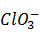

NÚMERO DE VALENCIA:
La valencia, es el número de electrones que tiene un elemento en su último nivel de energía, son los que pone en juego durante una reacción química o para establecer un enlace con otro elemento. Hay elementos con más de una valencia, por ello se reemplaza a este concepto con el de números de oxidación que a fin de cuentas representa lo mismo.
NÚMERO DE OXIDACIÓN:
El número de oxidación es un número entero que representa el número de electrones que un átomo pone en juego cuando forma un compuesto determinado.
El número de oxidación es positivo si el átomo pierde electrones, o los comparte con un átomo que tenga tendencia a captarlos. Y será negativo cuando el átomo gane electrones, o los comparta con un átomo que tenga tendencia a cederlos.
La diferencia entre el número de valencia y oxidación es que el número de valencia de un elemento determina el número de electrones que tiene en su último nivel de energía y el número de oxidación es el que nos dice el número de electrones que un átomo recibe o que pone a disposición de otros.
Cada átomo de un compuesto se caracteriza por un estado de oxidación, debido a los electrones ganados o perdidos (totalmente en los compuestos iónicos o parcialmente en los covalentes) con respecto al átomo aislado. El número que indica este estado se llama número de oxidación del elemento en dicho compuesto. El número de oxidación (n.o) se define como la carga eléctrica formal (puede que no sea real) que se asigna a un átomo en un compuesto.
Para asignar el n.o. a cada átomo en una especie química (NH3, ClO3 ., etc.) se emplea un conjunto de reglas, que se pueden resumir del modo siguiente:
- El n.o. de todos los elementos libres es cero, en cualquiera de las formas en que se presenten: Ca metálico, He, N2, P4, etc. (En moléculas con átomos iguales, N2, H2, etc., los electrones del enlace están compartidos equitativamente y no se pueden asignar a ninguno de los átomos).
- El n.o. de cualquier ión monoatómico es igual a su carga eléctrica. Así, los n.o. del S-2, Cl-, Na, K+ y Zn2+ son, respectivamente, -2, -1, 0, +1 y +2, que coinciden con sus respectivas cargas eléctricas (reales).
- El n.o. del H en sus compuestos es +1, excepto en los hidruros metálicos, que es -1.
- El n.o. del O en sus compuestos es -2, excepto en los peróxidos, que es -1.
- El n.o. de los metales alcalinos es siempre +1.
- El n.o. de los metales alcalinotérreos es siempre +2.
- El n.o. del F en sus compuestos es siempre -1. El n.o de los demás halógenos varía desde ±1 a +7, siendo positivo cuando se combina con el O ó con otro halógeno más electronegativo.
- La suma algebraica de los n.o. de los átomos de una molécula es cero, y si se trata de un ion, igual a la carga del ion.
Con estas reglas se puede calcular fácilmente el n.o. de cualquier elemento en una especie química. Así, en NH3 y .Los n.o. son: N = -3, H = +1, Cl = +5 y O = -2.